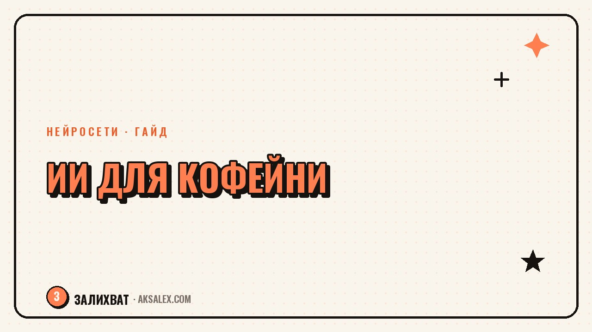

Нейросети для кофейни: меню, посты и учёт

Маленькая кофейня держится на одном-двух людях, которые варят кофе, считают деньги, ведут соцсети и отвечают клиентам одновременно. Нанять маркетолога и бухгалтера на старте не на что, а времени на всё не хватает физически. Нейросети не заварят эспрессо и не заменят разговор с постоянным гостем, но закрывают рутину: тексты меню, посты, подсчёт расходов, ответы на частые вопросы. Разбираемся, где нейросети для кофейни и бариста реально экономят часы в неделю, а где свой опыт и вкус важнее любого инструмента.
Меню и описания блюд без копирайтера
Написать живое описание для раф с карамелью или сезонного сырника - задача, на которую легко уходит полдня, если делать это с нуля каждый раз. Нейросеть быстро собирает черновик: дай ей состав, вкус, пару деталей (например «домашний сироп» или «обжарка собственной прожарки») - и получишь варианты текста для меню и для карточки товара на агрегаторе доставки.
То же самое с сезонными позициями. Перед запуском тыквенного или имбирного напитка попроси нейросеть предложить 5-6 вариантов названия и короткое описание на основе состава - выберешь то, что звучит по-твоему, и подправишь формулировки. Это быстрее, чем придумывать с нуля под дедлайн запуска новой линейки.
- Проси сразу несколько вариантов тона: один - простой и короткий, другой - с акцентом на вкус и эмоцию.
- Указывай аллергены и состав точно - нейросеть не проверит рецепт за тебя, информацию вносишь сама.
- Сохраняй удачные формулировки в отдельный файл - потом быстрее собирать новые сезонные меню.
Посты, сторис и ответы клиентам в соцсетях
Соцсети кофейни - это не творческий проект, а витрина: люди смотрят, что сегодня в меню, какая атмосфера и стоит ли зайти. Нейросеть помогает закрыть рутину постинга: подпись к фото с новым напитком, анонс акции, пост про расписание в праздники - всё это можно получить черновиком за минуту и доработать под свой голос.
Отдельная экономия - ответы на частые вопросы в директ и комментарии: «работаете ли в праздники», «есть ли безглютеновая выпечка», «можно ли с собакой». Если вопросы повторяются, попроси нейросеть собрать готовые короткие ответы на самые частые из них - и просто подставляй нужный, а не печатай одно и то же заново каждый день.
Клиент не замечает, что подпись к фото написал не ты сам. Он замечает, если кофейня месяц не отвечает в директ и не публикует актуальное меню.
Учёт расходов и простая аналитика
Маленькой кофейне часто не до сложных систем учёта - расходы на зерно, молоко, стаканы и аренду записываются куда попало, а в конце месяца непонятно, где прибыль, а где просто движение денег. Нейросеть не заменит бухгалтера, но может помочь привести хаотичные записи в таблицу: статья расхода, сумма, периодичность (разовая или регулярная).
Полезный приём - раз в неделю скидывать нейросети список закупок и трат за эту неделю текстом, как есть, и просить свести в таблицу с категориями. Через месяц-два у тебя накопится структура, по которой видно, на чём реально можно сэкономить - например на поставщике стаканчиков или объёме закупки молока.
Где нейросеть реально экономит время, а где нет
| Задача | Экономит время | Нужен человек |
|---|---|---|
| Описание напитков для меню | Да, черновик за минуту | Финальный вкус и формулировки |
| Посты и подписи в соцсетях | Да, рутинные публикации | Фото и атмосфера заведения |
| Ответы на частые вопросы | Да, типовые вопросы | Жалобы и конфликтные ситуации |
| Учёт расходов | Частично, сведение в таблицу | Решения по закупкам и ценам |
| Работа с поставщиками | Нет | Переговоры и личные договорённости |
С чего начать внедрение нейросетей в кофейне
Не нужно сразу автоматизировать всё - начни с одной задачи, которая больше всего выматывает именно тебя. Если это посты в соцсетях - заведи шаблон промпта с описанием стиля заведения и подавай туда новые позиции меню. Если это учёт - начни со сведения трат за одну неделю в таблицу и посмотри, насколько это облегчает картину.
Чеклист на первую неделю
- Выбери одну повторяющуюся задачу (меню, посты или учёт) и опиши её нейросети один раз подробно.
- Сохрани удачный запрос-шаблон, чтобы не формулировать заново каждый раз.
- Через неделю оцени, сколько реально сэкономила времени, и подключай следующую задачу.
Так внедрение идёт постепенно и не отвлекает от главного - кофе и гостей. Нейросеть здесь работает как помощник по бумажной и текстовой рутине, а не как замена вкусу, сервису и личному контакту с постоянными клиентами, которые и выделяют маленькую кофейню среди сетевых.
Частые вопросы
Можно ли вести маленькую кофейню с нейросетями без маркетолога?
Да, для текстов меню, постов в соцсетях и типовых ответов клиентам нейросеть закрывает часть работы маркетолога. Стратегию продвижения, фотоконтент и живое общение с гостями всё равно решаешь сама или нанимаешь отдельного человека под конкретную задачу.
Как нейросеть помогает с меню кофейни?
Ты даёшь состав и пару деталей о вкусе, а нейросеть предлагает варианты описания и названия для меню или карточки доставки. Финальные формулировки и проверку состава на аллергены всё равно делаешь сама.
Помогает ли нейросеть вести учёт расходов в кофейне?
Нейросеть не считает деньги за тебя, но может свести хаотичные записи трат в таблицу по категориям - зерно, аренда, упаковка. Это упрощает картину расходов, но решения по закупкам и ценам принимаешь сама.
Какую нейросеть выбрать для соцсетей кофейни?
Подойдёт любой текстовый чат-бот с нейросетью для черновиков подписей и постов. Для фото и видео нужны отдельные инструменты или собственная камера, нейросеть здесь помогает только с текстом.
Стоит ли нейросетью отвечать клиентам в директ кофейни?
Для типовых вопросов - про часы работы, меню, условия с животными - да, это ускоряет ответы. Жалобы и нестандартные ситуации лучше решать самой, живым тоном, без шаблонных формулировок.
Раз тема оказалась полезной, вот что почитать следующим. Нейросети для подготовки свадьбы: бюджет, рассадка гостей, сценарий и тосты без свадебного агентства.
Читать статью →а не вручную